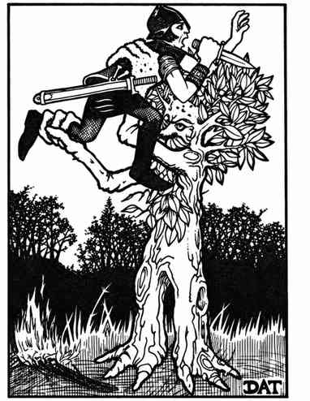
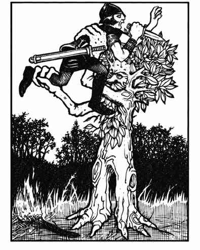

树人 · Treant

 |
|
树人与人类和树木都有奇异的亲缘关系，兼具两者特征。它们生活在树林和森林中，基本无法与树木区分，憎恨邪恶以及不受约束地使用火焰。必要时，树人能使树木活化，以每轮 3 寸的速度移动，并以成年树人的方式攻击（每次攻击 4–24 点伤害）。被激怒的树人必须在普通树 6 寸内才能使其移动；一只树人每次只能让一两棵普通树移动并攻击。
树人的身体和皮肤结构使其护甲等级极高，但火焰会削弱这种优势：以火焰为基础的攻击命中检定 +4，树人对此类攻击的豁免 −4，且火焰伤害每骰 +1 点。小型树人（高 12–15 尺）有 7–8 生命骰，每次攻击造成 2–16；中型树人（16–19 尺）有 9–10 生命骰，造成 3–18；大型树人（20–23 尺以上）有 11–12 生命骰，造成 4–24。树人及其控制的树木攻击要塞时，无论体型大小，每只树人的两次攻击合计造成 1 点结构伤害。
树人的巢穴通常是由大量植物和树木遮蔽的巨大洞穴，它们极度厌恶不请自来的闯入者。